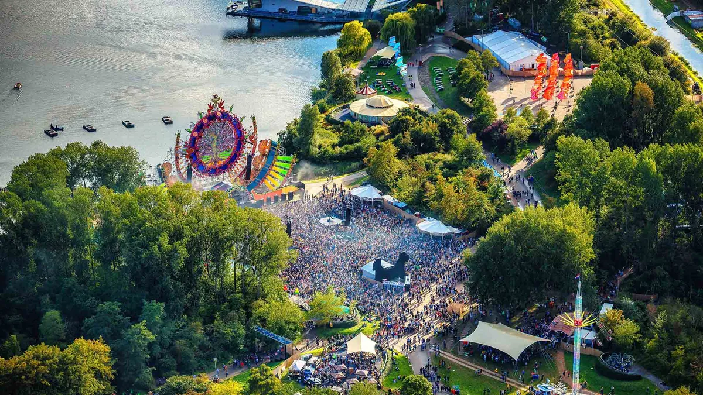
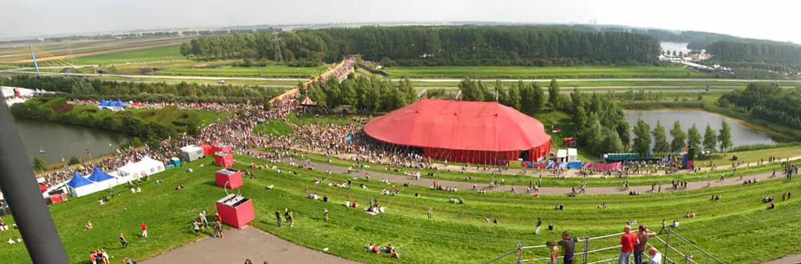
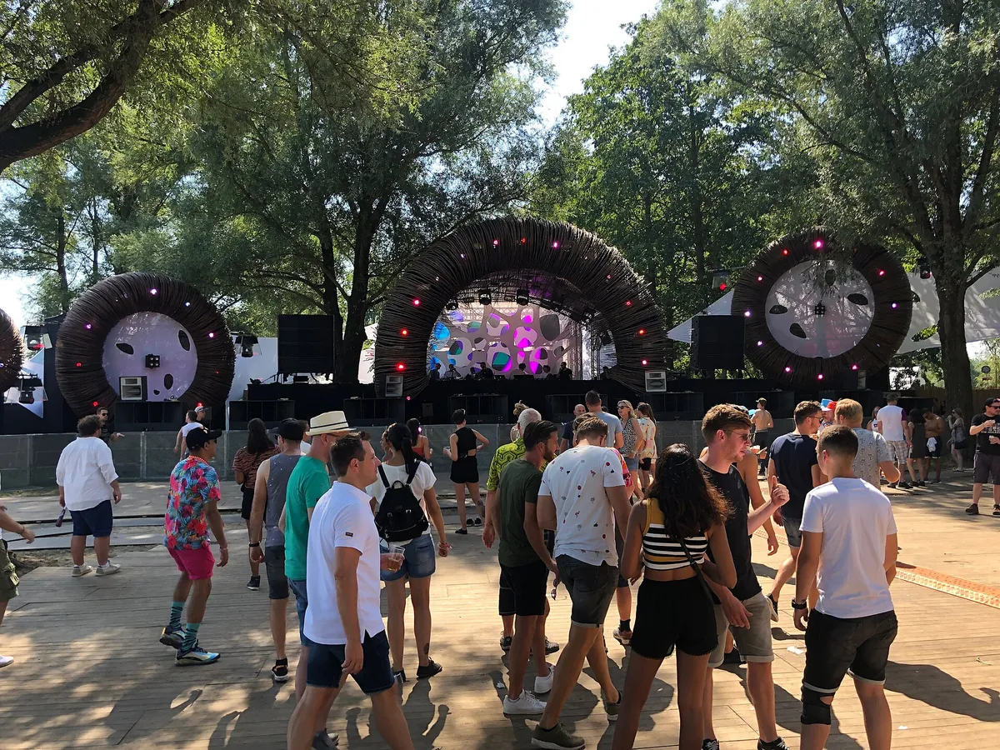
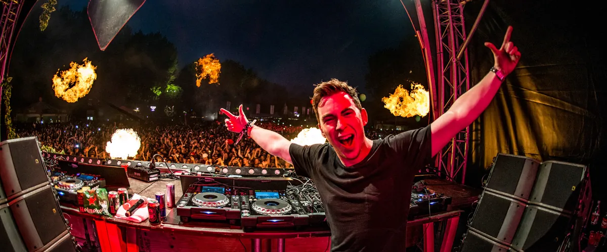
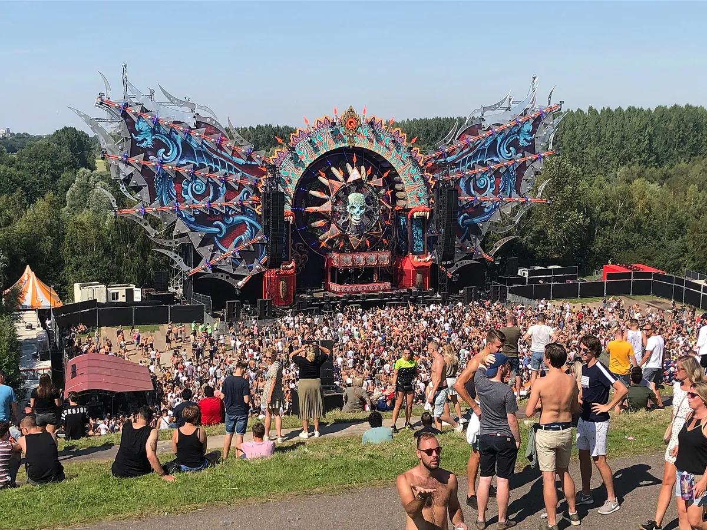

Mysteryland
Mysteryland Festival
A 1993 rave that settled on the old Floriade grounds in Haarlemmermeer and grew into a weekend. Where it happens, why it is skipping 2026, who owns it, and what plays across its stages.
A rave that found a home.
Mysteryland is older than most of the music it now books. The first one, in 1993, was a rave at the Midland Circuit in Lelystad that lost its organisers money. For its first decade it moved from site to site, then in 2003 it settled on the grounds of a horticultural exhibition outside Hoofddorp, where it grew into a weekend with a campsite and main stages built as giant sculptures.
This guide covers Mysteryland 2027 and why there is no Mysteryland festival in 2026, then where it happens, how big it is, how it grew and who owns it now, and what actually plays across its stages.
Mysteryland 2027, and why there is no 2026.
Mysteryland 2027 is dated 27, 28 and 29 August 2027, Friday to Sunday, in Haarlemmermeer again: the official site says the journey continues in "our familiar home". As of September 2026 the line-up, the ticket prices and the new concept itself had not been announced, and the site was taking pre-registrations.
There is no Mysteryland 2026. In July 2025 ID&T announced that Mysteryland 2025, held from 22 to 24 August on the Floriade grounds, would be the last edition in its current form, and that the festival would pause in 2026 and come back in 2027 with a new concept. The organisers gave two reasons: production costs had nearly doubled since the pandemic, and audience tastes were changing faster than ever. They also said they were not planning to leave the site.
The 2025 edition ended on the Sunday night with an endshow of drones, fireworks, lasers and 3D visuals over the main stage, the festival's farewell to the version of itself it had built over two decades in Haarlemmermeer. The festival filmed the whole show, its Sunday Drone Endshow.
Where Mysteryland happens.
Where is Mysteryland? Since 2003 the Mysteryland location has been the former Floriade grounds at Vijfhuizen, in the municipality of Haarlemmermeer, near Hoofddorp. The site was laid out for the 2002 Floriade, the Dutch horticultural exhibition, and the festival moved in the year after it closed. Now a park, the Haarlemmermeerse Bos, it gives the festival a lake, woodland and a grass-covered pyramid high enough to look out over the whole site.

When is it? Traditionally the last weekend of August. The 2025 edition ran from Friday 22 to Sunday 24 August, and the 2027 edition is dated Friday 27 to Sunday 29 August. It is for over-18s only.
Before Haarlemmermeer it barely stayed anywhere twice: the Midland Circuit in Lelystad, the Maasvlakte in Rotterdam, Eindhoven's airfield, the recreation areas at Bussloo and Lingebos, a theme park, and Ruigoord in Amsterdam. The table further down lists every site.
How big Mysteryland is.
In 2019 Mysteryland drew more than 100,000 people from over 100 nationalities, with more than 300 artists. The festival's own site now puts it at more than 125,000 visitors a year and over 250 artists, and Haarlemmermeer's tourist board calls it the largest dance festival in the Netherlands.
It grew in steps. The raves of the late 1990s drew 25,000 to 35,000 people, the first year in Haarlemmermeer 40,000, and by 2007 more than 60,000. The biggest numbers came after 2015, when a one-day festival became a weekend with camping.
| Year | Where | Visitors |
|---|---|---|
| 1993 | Midland Circuit, Lelystad | not published |
| 1994 | Maasvlakte, Rotterdam | not published |
| 1995 | no festival | |
| 1996 | Eindhoven airfield | 25,000 |
| 1997 | Bussloo | 25,000 |
| 1998 | Lingebos | 25,000 |
| 1999 and 2000 | Bussloo | 35,000 |
| 2001 | Six Flags Holland | not published |
| 2002 | Ruigoord, Amsterdam | 20,000 |
| 2003 | Floriade grounds, Haarlemmermeer | 40,000 |
| 2004 and 2005 | Floriade grounds | more than 100,000 across the two |
| 2007 to 2009 | Floriade grounds | more than 60,000 a year |
| 2013 | Floriade grounds | 60,000, sold out |
| 2019 | Floriade grounds | more than 100,000 over the weekend |
| 2020 and 2021 | none | cancelled for the pandemic |
| 2025 | Floriade grounds | last edition in its current form |
| 2026 | none | paused |
| 2027 | Haarlemmermeer | dated 27 to 29 August |
Until 2015 Mysteryland was mostly a single day or night, so the early figures are for one day; the 2019 figure covers the weekend. The numbers are the organisers', as recorded in the Dutch Wikipedia's history of the festival.
A short history, and who owns Mysteryland.
Mysteryland was not ID&T's idea. The first edition, in 1993 at the Midland Circuit in Lelystad, was organised by Sander Groet and Brian Bout through their company TNT, The Nations Top. It was well attended and still lost money. In 1994 Groet met Irfan van Ewijk, one of ID&T's founders, in a print shop, and the second Mysteryland was a joint production. It ran into debt, and there was no festival in 1995.
It came back in 1996 as a single night at Eindhoven's airfield, built around hardcore, the sound of the Dutch gabber scene. In 1997, at Bussloo, it rained so hard that the organisers rang the local farmers to bring straw for the mud. In 1998, at Lingebos, 25,000 people came for the third year running, despite the Netherlands playing Argentina at the World Cup.
In 2002 it became a day festival at Ruigoord, in Amsterdam, on a smaller site with 20,000 people. In 2003 it moved to the former Floriade grounds, took 40,000 people across 12 areas, and has stayed. In the years that followed Tiësto arrived by helicopter, the main stage became a production in its own right, hip hop arrived in 2006 with Opgezwolle, and in 2007 the Coolpolitics programme put politics among the stages.

The 2013 edition, the twentieth, sold out at 60,000. In February 2015 the organisers added a day and a campsite, and Mysteryland became a weekend festival. The 2020 and 2021 editions were cancelled for the pandemic.
Who owns Mysteryland? ID&T, the Dutch promoter named after the initials of its three founders, Irfan van Ewijk, Duncan Stutterheim and Theo Lelie. It also created Thunderdome and Sensation, and was part of Tomorrowland until 2013. ID&T itself has changed hands several times. SFX Entertainment bought a 75% stake in 2013, went bankrupt in 2016 and came out of it as LiveStyle; LiveStyle sold ID&T to the British festival group Superstruct Entertainment in 2021; and in 2024 the American investment firm KKR bought Superstruct, for US$1.4 billion.
Mysteryland USA and Chile
Mysteryland Netherlands, the original, has had two offshoots abroad. In 2011 Mysteryland Chile became the first edition held outside the Netherlands.
Then on Memorial Day weekend in May 2014, Mysteryland USA opened at the Bethel Woods Center for the Arts in New York State, on the site of the 1969 Woodstock festival. It ran there in 2014, 2015 and 2016. In April 2017 the organisers cancelled the next edition, which had LCD Soundsystem, G-Eazy and Major Lazer at the top of the bill, citing unforeseen circumstances. 2016 was the last American Mysteryland.
Why Mysteryland is famous.
First, its age. Its own site calls it the world's longest-running electronic music festival, 32 years and counting by 2025, and very few festivals anywhere have a run that begins in 1993.
Second, the way it is built. Since the mid-2000s the festival has put more and more into the décor of its main stage, and the Saturday and Sunday now close with an endshow on it. The Sunday show in 2024, a drone show, has been watched 1.9 million times on the festival's YouTube channel.
Third, its areas. Much of Mysteryland is programmed by other people. Q-dance, the hardstyle promoter, first had a stage in 2001, and Sven Väth's Cocoon hosted an area from 2002. In 2023 the festival's warm-up mixes came from its hosts, among them Cocoon, Q-dance, Thunderdome and Trance Energy.

That makes Mysteryland a set of small festivals inside a big one. In 2003 there were 12 areas; by 2009 there were 21.
The music
What the music actually is.
Mysteryland started as a house party and became something much broader, on purpose: the Dutch Wikipedia describes it growing into a festival of many styles meant to draw a wider audience. Its own genre list runs from techno, house and trance to hardstyle, hip hop and urban.
The 1990s editions leaned on hardcore. The 1996 night at Eindhoven was built around it, and ID&T had run its own hardcore brand, Thunderdome, since 1992. In the mid-2000s Tiësto made his entrance by helicopter, and by the 2010s the main stage belonged to big-room EDM: Steve Aoki, Fedde le Grand and Steve Angello were on the sold-out 2013 bill.

Techno has come up from the side stages. Cocoon's area carried it for years, and in 2024 Charlotte de Witte played the main stage. Hardstyle has kept its own corner since Q-dance's first stage in 2001, and in 2019 that stage was built at the foot of a slope, with the crowd watching from the grass above it.

Hip hop has had a place since Opgezwolle played in 2006. The useful thing for a listener to know is that there is no single Mysteryland sound. Hardwell's set in 2023 and Charlotte de Witte's in 2024, below, were played on the same main stage a year apart.
Hearing Mysteryland from home.
Mysteryland is barely in the Selector: of the DJ sets behind the Selector, two were recorded there, both filmed by Mixmag in 2016. One is Franky Rizardo's house set, the other a live set by Surgeon and Lady Starlight.
The festival films its own main stage. The two sets below are the most watched sets among its recent uploads: Hardwell in 2023, at 2.8 million views, and Charlotte de Witte in 2024, at 2.4 million, as of September 2026.
Mysteryland and Tomorrowland share a family tree through ID&T; for the Belgian festival, read our guide to Tomorrowland. And the Selector plays a DJ set at random from 62,824, if you would rather not choose. Comparing it with other festivals? See the best electronic music festivals in Europe.
Mysteryland FAQ.
Is Mysteryland happening in 2026?
No. ID&T paused Mysteryland in 2026, after a 2025 edition billed as the last in its current form. It returns on 27 to 29 August 2027.
When is Mysteryland 2027?
Friday 27 to Sunday 29 August 2027, in Haarlemmermeer, according to the official site. The line-up and ticket prices had not been announced as of September 2026.
Where is Mysteryland held?
On the former Floriade grounds at Vijfhuizen, in the municipality of Haarlemmermeer, near Hoofddorp. It has been there since 2003.
How many people go to Mysteryland?
More than 100,000 over the weekend in 2019, from over 100 nationalities. The festival's own site now says more than 125,000 a year.
What is the difference between Mysteryland and Tomorrowland?
Mysteryland is older and Dutch: it began in 1993 and is held in Haarlemmermeer at the end of August. Tomorrowland began in 2005 and is held over two weekends in July at De Schorre in Boom, Belgium. ID&T worked on both, but its part in Tomorrowland ended in 2013, and Tomorrowland's parent company today is WEAREONE.world.
How much are Mysteryland tickets?
Prices for Mysteryland tickets for 2027 had not been announced as of September 2026. The official site is taking pre-registrations, and the festival is for over-18s only.
Sources.
- Wikipedia (Dutch): Mysteryland
- Wikipedia: Mysteryland
- Wikipedia: ID&T
- Mysteryland: 32 years and counting
- Mysteryland: FAQ (2027 dates, location, minimum age)
- Mysteryland press release: final edition in its current iconic form, return in 2027 with a new concept
- Digital Music News: Mysteryland announces break for 2026, will return in 2027
- Festival Insights: Mysteryland announces return in 2027 after creative break
- Visit Haarlemmermeer: Mysteryland, the largest dance festival in the Netherlands
- Spin: Mysteryland electronic festival headed to original Woodstock site
- Billboard: Mysteryland USA 2017 canceled by organizers
- Mysteryland on YouTube
Continue reading
Read next.
 A17Guide / Tomorrowland / ~9 min
A17Guide / Tomorrowland / ~9 minTomorrowland Festival: Where It Is, How Big, and the Music
A park in Boom, Belgium, that most of the world knows through a livestream: where Tomorrowland happens, how big it is, who owns it, and what plays off the Mainstage.
Read article → A18Guide / EDC Las Vegas / ~11 min
A18Guide / EDC Las Vegas / ~11 minEDC Las Vegas: What It Is, How Big, and the Music
Electric Daisy Carnival at the Las Vegas Motor Speedway: where EDC happens, how half a million people a year grew out of a field in Chino, and what plays past kineticFIELD.
Read article → A19Guide / Creamfields / ~10 min
A19Guide / Creamfields / ~10 minCreamfields Festival: Where It Is, How It Grew, the Music
Four days on the Daresbury estate every August bank holiday: where Creamfields happens, how a Liverpool house night grew into it, who owns it, and what plays beyond the Arc Stage.
Read article → A20Guide / Parookaville / ~10 min
A20Guide / Parookaville / ~10 minParookaville Festival: Where It Is, Who Runs It, the Music
A festival staged as a city on an old RAF airbase at Weeze: where Parookaville happens, how three friends built it, how many people go, who runs it, and what plays there.
Read article →